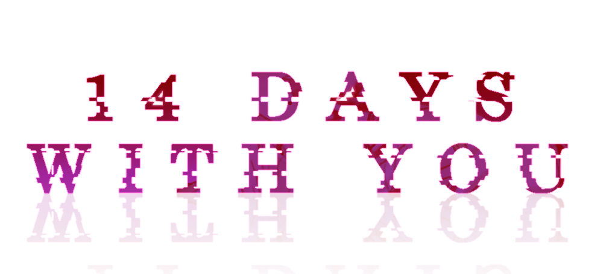
Ren has pink hair, a soft voice, and has been planning your reunion for 15 years. The 14 Days With You game is a psychological horror romance — free, 4.9 stars, 5,120 ratings. Here is everything you need to know.
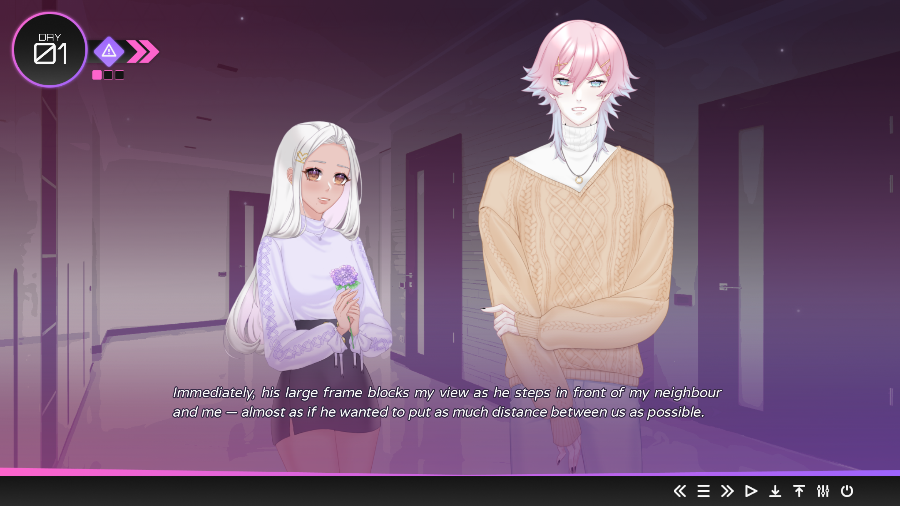
A psychological yandere horror visual novel with 30+ endings.
Free to play — no download required.
A seaside town, a new job, and a man who has been waiting far too long for you to arrive.
14 Days With You is a free psychological horror visual novel by solo developer cutiesai. You move to Corland Bay — a foggy coastal town where nothing much happens — and take a job at the local library. The first few days are quiet. You meet the neighbors. You settle in. It feels like a fresh start.
Then Ren shows up. Pink hair, soft voice, works at the library too. He knows your coffee order before you order it. He remembers a book you loved when you were eight. He texts you goodnight every evening. He is gentle and thoughtful and has been waiting for you for fifteen years.
The 14 Days With You game launched on itch.io in 2023 and has been updated steadily since. It sits at 4.9 out of 5 stars from over 5,120 ratings. The Discord server has 80,000 people in it, and they are not there for the library scenes.
Built in Ren'Py, 14DWY runs on Windows, macOS, and Linux. A browser version is playable right here. The story is split into four Books. Books 1, 2, and 3 are done. Book 4 is in active development, with early builds on Patreon. The full game stays free after release.
Content Warning (18+) — 14 Days With You contains stalking, violence, gore, murder, emotional abuse, gaslighting, non-con/dub-con themes, and suicide/self-harm in certain endings. For players 18 and older. The developer provides a full trigger list and an optional Content Filter that skips the heaviest scenes.
Most yandere visual novels sprint to the scary part. 14 Days With You walks — and that is why it works.
Real texts, calls, social media, hacked footage. Skip a message and the game remembers. Reply wrong and an ending locks. Ren's mood changes the music and screen effects in real time.
Devotion — how much you trust Ren. Awareness — how much you notice what is wrong. You never see the numbers. A Book 1 choice can open or close a scene in Book 3. The system is fully retroactive.
Warm coffee-shop scenes. Quiet library evenings. And then the kind of images that make you close the game at 2 AM. The art shifts as Ren does. You will know exactly when the mask comes off.
Four surface paths — Sweet, Neutral, Bitter, Obsessive. Nine more hidden under specific phone choices and stat combos. One ending has been found by 0.7% of players. The developer confirmed it exists. That is all anyone knows.
Full voice acting for both leads. Ren's voice is warm, quiet, steady — players call it "disturbingly soothing." You will hear it in your head after you close the game. That is not an exaggeration.
One route runs 8 to 12 hours. Books 1-3 are out in full. Book 4 is in progress. Completionists chasing every death, every secret, every phone message variant — you are looking at triple digits.
Everyone in Corland Bay knows something. Most of them wish they did not.
Pink-haired librarian. Soft voice. Photographic memory for everything about you. He texts goodnight at the same time every evening. He remembers your childhood books by name. He is kind and attentive and patient and has a second identity — [REDACTED] — that the story unravels one thread at a time.
The game does not ask whether Ren is dangerous. It asks how long you will pretend he is not. The 80,000 people in the Discord are there because Ren is not a caricature. He is believable. That is what makes him stick.
You name yourself. You choose your pronouns and some of your appearance. You come to Corland Bay running from something left behind in the city. The game feeds your backstory in pieces — a detail here, a flashback there. You are not a blank slate.
Every reply to Ren, every text you answer or ignore, every time you challenge his too-perfect memory of your habits — the game tracks all of it across all four Books. The weight adds up in ways you do not feel until it is too late.
Your neighbor was the first to mention it — someone leaving your apartment while you were at work. They do not bring it up again.
Your online friend has known you for years. Their messages get shorter. More urgent. You stop replying as fast as you used to.
The library staff — they see Ren come in three times a day. One of your coworkers stops meeting your eyes after the first week.
The town is gray and damp and quiet after dark. Everyone knows everyone. Nobody asks too many questions. The library — your workplace — is warm and well-lit and slowly becomes the only place you feel safe, which is exactly the problem.
The atmosphere is built in the details: foghorns in the distance, the creak of your apartment door at night, your phone lighting up at 2 AM with a text from Ren asking why you are still awake.
Getting 14 Days With You running takes under a minute. Free download or browser — both work.
Search 14DWY on itch.io. Click Download Now. Pick a price — $0 works. 157MB on PC, 151MB on Mac. Extract and run. No install. No launcher.
The 14 Days With You download is optional. Scroll up — the game is embedded above. No account. No install. Click in, start reading. Good if you want to try it before clearing 157MB of disk space.
It is a visual novel. Click to advance text. Pick dialogue options when they appear. Every answer nudges the hidden Devotion and Awareness meters. There is no wrong choice — just different hallways in the same dark house.
Some endings hit with no warning. One bad reply and the screen goes black. Use every save slot. Label them. You will backtrack, and you will be glad you did — the second run shows you things the first run hid on purpose.
Four main paths, nine secret ones, and one 14 Days With You ending that almost nobody has seen.
High Devotion, low Awareness. You trust Ren. You brush off the red flags. The romance is warm and the horror is quiet — it lives in the spaces between what you see and what you choose not to. The Sweet ending looks happy. Then you replay and realize what you missed.
Moderate everything. You like Ren but keep a door open. You notice odd things but do not act. The Neutral path has the widest range — bittersweet goodbyes, slow complicity, moments where you almost turn back and do not.
Low Devotion, high Awareness. You push back. You ask questions. You try to leave. This is where 14 Days With You becomes a horror game. Ren does not handle rejection well. The darkest death endings sit on this path.
Maximum Devotion, zero Awareness. You give yourself to him completely. Hardest route to unlock, hardest to sit through. This path goes to the bottom of the story — what Ren has been doing for 15 years, and why.
Unlocked by extreme meter values, specific phone reply chains, or choices stacked across multiple Books. These paths show content the main routes never touch — scenes from Ren's perspective, fragments of backstory, context that reframes the entire thing.
0.7% of players as of late 2025. The developer says it exists. No hints. Community theory: a precise sequence of phone responses across all three Books, combined with a Devotion-to-Awareness ratio that almost no one hits by accident.
Bonus content drops through Patreon. Here's what you get and whether you need it.
Extra dialogue and interactions with Ren that deepen his backstory. These scenes don't fit in the main route structure but add meaningful context to his behavior — especially in Books 2 and 3.
Journal entries, surveillance logs, and in-universe files covering the fifteen years before you arrived in Corland Bay. Community hunters consider these essential for the hidden ending.
Vignettes from other characters' perspectives. Exclusive artwork and partially voiced scenes. You see Ren from angles the protagonist never does — and it changes things.
A separate paid add-on on itch.io. Install it by placing the folder — named exactly 14 Nights With You — inside the base game's game folder. Restart if it doesn't show up.
14 Days With You DLC free download — here's the deal. Patreon subscribers ($5/mo) get DLC content first. After a few months, most of it rolls into the free public build through normal updates. There's no standalone DLC page. Pay for early access. Wait for free. Same content either way.
Things I wish someone told me before my first run. No spoilers.
The horror only lands because the game spends hours making you comfortable first. Let the coffee runs and library shifts happen. Let Ren feel safe. The drop is longer when the climb is higher.
The phone is not decoration. Ignored texts close paths. Missed calls shift routes. Ren notices when you leave him on read. The game logs it.
One dialogue click can black-screen you. No warning, no undo. Spread your saves across all slots. Label them. You will need the breadcrumbs.
The meters are retroactive. A Book 1 decision can change a Book 3 scene even on a different save file. Knowledge from previous runs makes replaying genuinely different — not just completionist busywork.
Ren's phrasing. The gap between his texts. How side characters stop mid-sentence when you walk in. The game buries its most important information in things that read like background noise the first time through.
Full trigger list. Optional filter that skips or softens the worst scenes. Nobody will judge you. Some endings on Bitter and Obsessive go places you might not want to follow.
80,000 people, active threads on every route, theories about Book 4, hidden scene discoveries. But play at least once blind first — the server spoils freely and half the fun is walking into it cold.
"Forever" is in active development with early builds on Patreon ($5 tier). No fixed release date — updates drop when they're ready. The Discord is the fastest place to hear about new builds.
5,120 ratings. 4.9 average. An 80,000-member Discord. This game is doing something right.
Most yandere games sprint to the scary part. 14DWY gives you warm domestic scenes for hours before the cracks show. By the time Ren's mask slips, you like him. That is the whole trick — and it works because the writing does not cheat. Players consistently say they felt genuinely attached before the dread kicked in.
He is not a knife guy. He is soft-spoken, thoughtful, attentive in ways that feel caring before they feel suffocating. His voice acting gets called "disturbingly soothing" because it is — warm and steady and wrong in a way your brain registers before your conscious mind does. He sticks with you because he is believable.
The retroactive meter system makes your second run show content your first run literally could not display. Third run strips another layer. Players with 80+ hours still post in Discord about dialogue variants and hidden scenes they just found. This is not a game you finish. You just stop for a while.
No musical sting when something is wrong. No character turns to camera and says "that was creepy." The horror lives in gaps — the pause before a text arrives, the way Ren says your name, the silence where a normal person would ask a follow-up question. The game assumes you are paying attention.
The numbers that matter.
Official images — Ren, Corland Bay, and moments from the story.

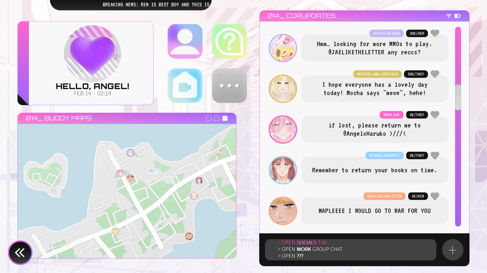
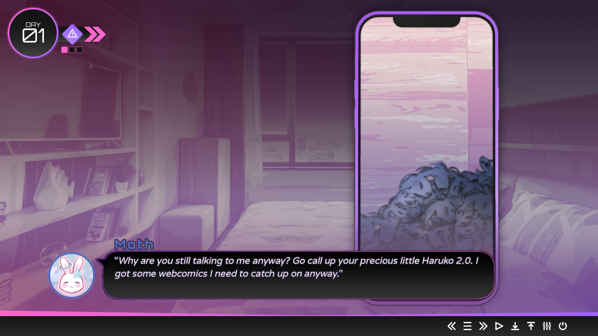
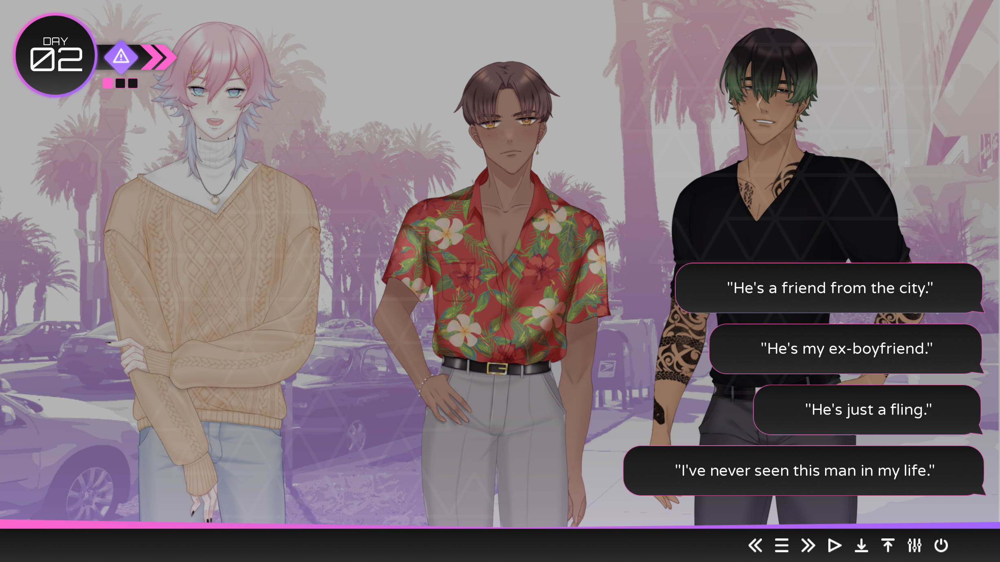
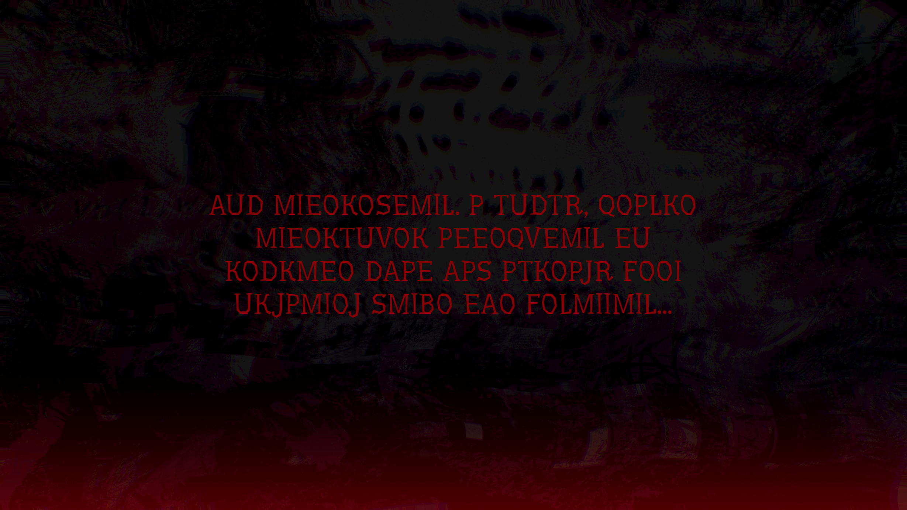
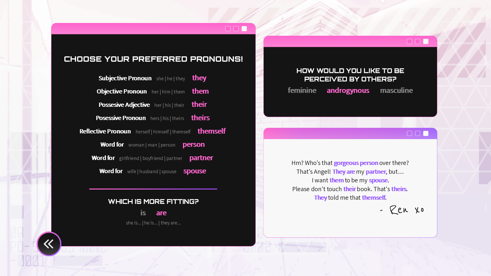
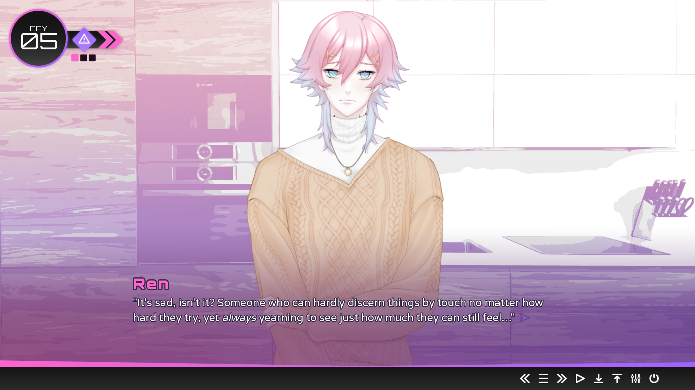
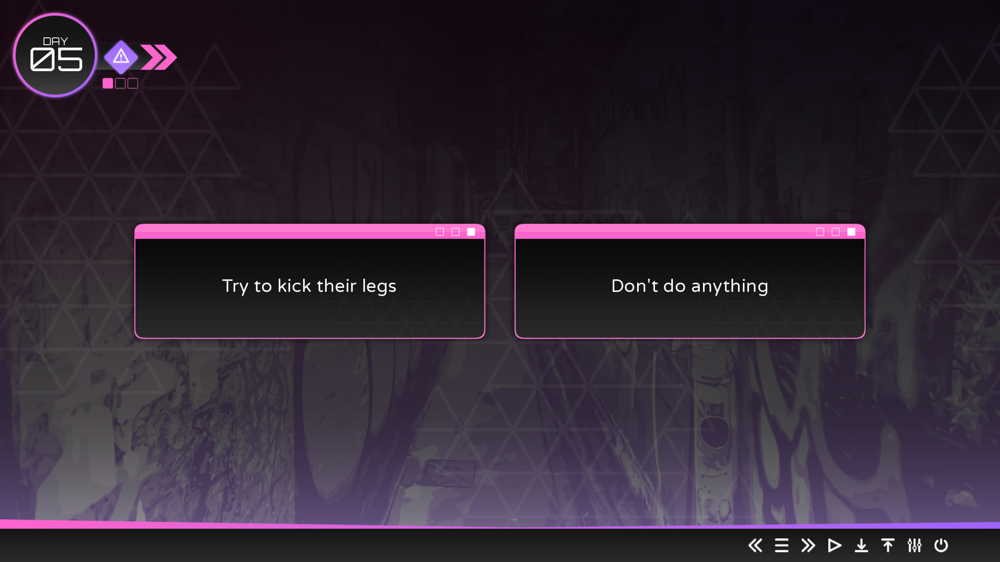
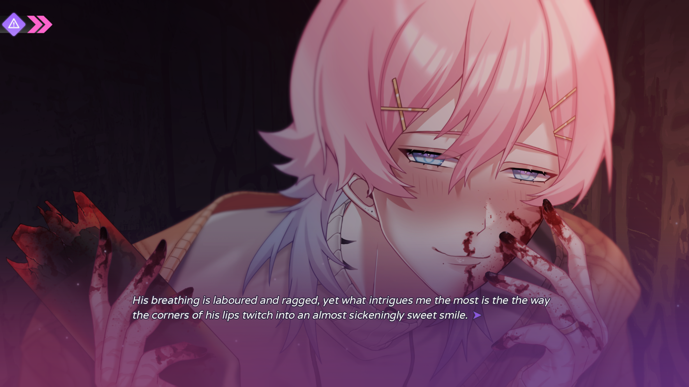
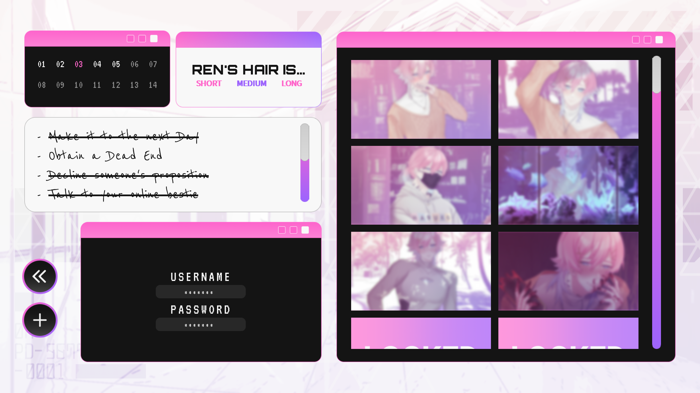
The questions people actually type into Google about this game.